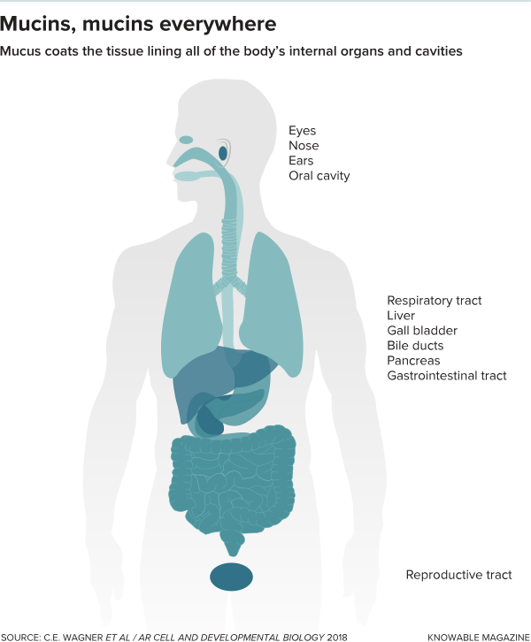

听说，由全球200多名科学家组成的研究团队，在过去2年的时间里通过世界各地的天文望远镜收集并整合了黑洞图像的数据，将于北京时间4月10日晚上九点整召开全球新闻发布会，公开人类天文史上的首张黑洞照片。
我们知道它最好是从鼻子上滴下的粘稠的粘液，以及由于气道恶化导致的粘稠，变色的粘液。 但它远不止于此。 涂抹肠道，眼睛，嘴巴，鼻腔和耳朵的表面，粘液起着一系列重要的生理作用 - 保湿，清洁，支持良好的微生物和防御外来入侵者。
科学家们已经发现了粘蛋白有助于保持身体表面清洁和保护的许多方法，并且正在继续解析分子与微生物之间的复杂相互作用。 以下是他们迄今为止所学到的一些内容，以及研究的目标。
大量的粘蛋白
根据所需功能，粘膜涂层在整个身体内变化很大。 例如，眼睛覆盖有不特别粘稠的粘液的薄膜，足以使其保持水分。 相比之下，结肠内部有一层厚厚的胶状涂层，可阻止细菌潜入。
这些物理特性的关键是粘蛋白本身。 由排列在体腔和表面的组织中的特化细胞产生，它们是我们制造的一些最大的分子，有两种主要的味道：分泌的粘蛋白，渗出形成大的网状网络，以及束缚的粘蛋白，它们仍然存在 锁定在细胞上。
粘蛋的制造随地点和环境而变化。 “有很多细胞特异性，”北卡罗来纳大学医学院的生物物理学家Brian Button说。 例如，保持呼吸道清洁的凝胶状粘液由分泌的粘蛋白MUC5B和MUC5AC组成。 通常，MUC5B占主导地位 - 例如，新英格兰医学杂志的2017年分析发现它比MUC5AC丰富了约10倍。 但是在感染和某些其他医疗条件下，MUC5AC水平急剧上升，形成更加坚韧，粘稠的粘液，难以从呼吸道清除。
巴顿说，更多MUC5AC可能是好的，因为粘性粘液可以防止细菌粘附在体细胞上并造成伤害。 但在诸如哮喘，囊性纤维化和慢性阻塞性肺病等疾病的情况下，MUC5AC过量产生可导致气道中有害的粘液积聚。
在身体的其他部位，如胃，高水平的MUC5AC是标准的，有助于保护衬里免受酸性消化液的影响。 而在肠道，另一种粘蛋白 - MUC2 - 是主要的参与者。 在结肠中，MUC2形成两层粘液 - 一个松散的外层衬里，容纳细菌和密集的内部屏障，使这些微生物不会穿透下面组织的细胞。 与气道不同，“在肠道，你真的没有太多的问题，”瑞典哥德堡大学的粘蛋白生物学家Gunnar Hansson说。 “你宁可拥有太多而不是太多。”

在粘液上用餐
今天人们越来越认识到，生活在肠道中的数万亿微生物 - 肠道微生物组 - 在健康和疾病中发挥着至关重要的作用。他们住在哪里？在层层培育粘液。事实上，很明显，这些共生细菌中的许多使用聚乙二醇分子作为主要能量来源的聚糖。为此，他们的基因组携带能够切割这些碳水化合物并消化它们的酶的代码。
细菌还释放出代谢产物，例如肠道细胞用来驱动更多粘蛋白产生的短链脂肪酸丁酸盐。 “他们正在利用能量来养活自己，但他们也正在产生能量，并将它们送回给我们。 。 。并且可以制造出大量的粘蛋白，“汉森说。 “他们从中受益，我们也从中受益。”
与我们的肠道天然居民不同，细菌病原体往往缺乏利用粘蛋白上的聚糖所需的机制，并且已经开发了其他方法来扩大其种群。
管理微生物行为
粘蛋白不仅仅是物理屏障和微生物食物。科学家们已经发现，装饰这些分子表面的聚糖可以影响病原微生物的行为和生理，降低它们传播和造成伤害的能力。
例如，在2012年的当代生物学研究中，Ribbeck和她的同事在试管实验中发现粘蛋白可以阻止细菌铜绿假单胞菌（Pseudomonas aeruginosa），这是许多危险的医院获得性感染的原因，形成生物膜 - 紧密结合的微生物群落难以根除。 Ribbeck的实验室后来发现，粘蛋白可以防止其他病原体的生物膜形成，包括变形链球菌（Streptococcus mutans），这是导致蛀牙的细菌。
除了控制外来入侵者外，粘蛋白还可以帮助控制我们身体的常驻微生物。 Ribbeck的研究小组发现，这些分子可以消除白色念珠菌的转变，白色念珠菌是一种通常在健康的微生物组中平静存在的真菌，是一种致病形式。他们通过抑制念珠菌形成细丝，附着于表面并形成其他特性使其受到伤害的能力来实现这一目的。
粘蛋白也可以作为诱饵来预防感染。 2009年，澳大利亚墨尔本大学的分子生物学家Mike McGuckin和他的同事在PLOS病原体中报告说，当幽门螺杆菌（一种可引起消化性溃疡和胃癌的细菌）试图将细胞结合在表面上时。胃，粘蛋白可以附着在病原体上。然后粘蛋白从细胞膜上分离出来，将潜在的入侵者带入酸性胃液中。 “许多细菌和病毒识别细胞表面的某些糖，这就是他们知道自己进入细胞的方式，”巴顿解释说。 “粘蛋白可以复制那些糖基化模式并起到类似分子诱饵的作用。”
但是一些引起疾病的细菌使用粘蛋白是有利的。 在另一项研究中，McGuckin及其同事证明，空肠弯曲杆菌是一种对鸡无害但可导致人类食物中毒的微生物，可以识别人类粘蛋白并利用它们的存在来提高致病基因的活性。
“有很多例子表明一种细菌在一个物种中是非致病性的，但在另一个物种中可能是致病性的 - 其中很多都与粘蛋白有关，”McGuckin说。 “病毒也是如此。”
制作合成粘蛋白
科学家们希望有一天能够为研究和治疗创造合成的粘蛋白，并为开发组织培养生产了相当多的工作。但在合成替代品成为临床现实之前，需要更好地了解分子的结构和生物物理特性，科罗拉多大学丹佛分校的分子生物学家克里斯托弗埃文斯说，他正在与同事们一起分析这些细节。
一旦完成，合成粘蛋白可用于实验室研究，并最终用于医疗保健应用，例如控制有问题的病原体，恢复受损或有缺陷的粘液衬里，以及通过创建可绕过粘膜屏障的涂层来改善药物递送。
Ribbeck认为还有更多的潜在用途：合成粘蛋白可能取代动物饲料中的抗生素，或者管理微生物群落以帮助作物生长。 “应用程序可能远远超出医疗保健，”她说。